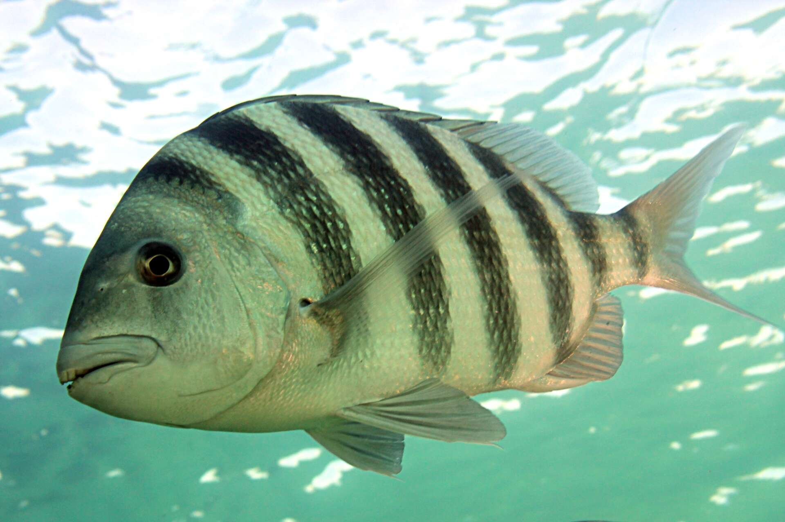
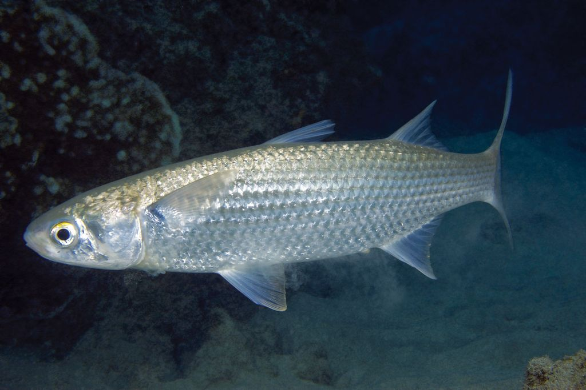

Ecological Significance

Gulf fisheries support billions of dollars in recreational and commercial activity annually, and species like Red Drum, Speckled Trout, and Southern Flounder are not just economically important — they serve as indicators of estuary health. When these populations decline, it is often a signal that the broader ecosystem is under stress from habitat loss, hypoxia, or overfishing. Knowing which species are truly related matters for conservation because closely related species often share habitat requirements, spawn at similar times, and respond similarly to environmental stressors. A management decision that helps one Sciaenidae species is likely to benefit its relatives; one that harms the shared estuary habitat affects the whole clade at once.
Why would a habitat protection policy aimed at one Sciaenidae species likely benefit the others, even if regulators never intended it to?
Closely related species share evolutionary history and, with it, many of the same ecological requirements — spawning habitat, salinity tolerance, prey preferences, and sensitivity to hypoxia often track phylogeny. Red Drum, Black Drum, Speckled Trout, and Atlantic Croaker all depend on seagrass beds and marsh edges at some life stage. A policy that restores or protects those habitats for one Sciaenidae species effectively benefits the entire family, even if the policy document only names one species. This is why phylogeny-informed conservation can be more efficient than species-by-species management: you can identify the shared evolutionary vulnerabilities of a clade and protect them at once.
Gulf estuaries experience seasonal hypoxic events — oxygen-depleted bottom water — that can cause mass fish kills. If Sciaenidae species share similar physiological tolerances (a consequence of shared ancestry), what prediction would you make about the pattern of mortality during a severe hypoxic event?
If the family's shared ancestry means similar hypoxia tolerance thresholds, a severe oxygen-depletion event would tend to eliminate a whole clade at once rather than selectively removing individual species. You would expect to see Red Drum, Black Drum, Speckled Trout, and Atlantic Croaker all affected in similar proportion, while more distantly related species (Southern Flounder, Sheepshead) with different ancestral physiology might show a different mortality profile. This phylogenetic prediction is testable: fish kill surveys from documented hypoxic events in Galveston Bay can be analyzed by family to see whether clade membership predicts vulnerability.
Conservation Applications

Misidentifying species leads to misallocated conservation effort. Juvenile Black Drum and Sheepshead look strikingly similar — both are silvery fish with bold vertical black bars that fade with age — yet they belong to completely different families: Sciaenidae and Sparidae, respectively. In the field, even experienced anglers sometimes confuse the two. DNA barcoding1 using the COI gene can distinguish them instantly, even from a small tissue sample taken without a whole fish present. This matters when assessing bycatch, monitoring spawning populations, or enforcing size and bag limits, because regulations that apply to one species do not apply to the other. Phylogenetic data gives managers the tools to identify what they are actually counting.
A fisheries officer at a shrimp processing dock finds a bin of small silvery fish with vertical bars mixed into the shrimp bycatch. She can't tell if they're juvenile Black Drum or Sheepshead. Why does this identification matter legally, and how would DNA barcoding resolve it?
Black Drum (Pogonias cromis) and Sheepshead (Archosargus probatocephalus) are regulated differently in Texas waters — they have different size limits, bag limits, and separate bycatch accounting rules. If a boat reports Sheepshead bycatch when the fish were actually undersized Black Drum, that misreporting could mask unsustainable harvest levels for Black Drum while inflating apparent Sheepshead bycatch. DNA barcoding from a small fin clip — even from a fish frozen since the trip — amplifies the COI region and produces a sequence that matches the GenBank reference for the correct species to well within the 2–3% divergence threshold that defines species boundaries. The identification is objective, takes hours, and requires no intact morphology.
The passage describes Sheepshead and juvenile Black Drum as "superficially similar." Name two morphological traits they genuinely share and one that reliably distinguishes them, even in the field.
Both species are deep-bodied silvery fish with bold vertical black bars that are most prominent in juveniles and fade with age — the convergent feature that misleads observers. Both are also found around structure (jetties, pilings, reef) in Gulf Coast estuaries. A reliable distinguishing character in the field is dentition: Sheepshead have prominent, human-like incisors and molar-like crushing teeth designed for barnacles and crustaceans, while Black Drum have no visible incisors and have pharyngeal teeth (in the throat) designed for crushing oysters and crabs. Chin barbels (whiskers) are also diagnostic — Black Drum have them, Sheepshead do not.
Fisheries Management

Fisheries managers set catch limits, size limits, and seasonal closures at the species level — so knowing species boundaries matters enormously for the regulations to be effective. Phylogenetic data increasingly informs stock assessment by revealing cryptic species: genetically distinct populations that look morphologically identical to one another but do not interbreed and may respond differently to the same fishing pressure. A harvest quota calculated for a single "species" that is actually two genetically isolated populations could inadvertently collapse one population while leaving the other intact. Phylogenetics also clarifies which populations are truly connected by gene flow and which are isolated, directly informing decisions about whether a regional closure will allow a stock to recover or whether the population structure makes local depletion irreversible.
A fisheries manager sets a harvest quota for Atlantic Croaker in Galveston Bay. Later, COI barcoding of sampled fish reveals that the bay population and the offshore Gulf population are genetically distinct — two cryptic species. What specific problem does this create for the existing quota?
The original quota was calculated assuming the bay and offshore fish were a single interbreeding population. If they are actually reproductively isolated, the two populations have different sizes, different productivity rates, and different resilience to fishing pressure. A quota calculated for the combined "stock" could be set at a level that is sustainable for the larger offshore population but devastating for the smaller, isolated bay population. The bay fish cannot be rescued by immigration from offshore if the two groups do not exchange migrants. The practical fix is to treat them as separate management units, estimate the size and productivity of each independently, and set separate quotas — but that requires the genetic data to know the distinction exists in the first place.
Phylogenetic data shows that Southern Flounder in the Gulf of Mexico and on the Atlantic coast are deeply divergent — potentially distinct management units. How would this change decisions about habitat restoration funding?
If the two populations are genetically isolated, gene flow from one region cannot rescue the other from local depletion. A collapsed Gulf population of Southern Flounder will not recover by recruitment from Atlantic fish. This means that habitat restoration dollars spent in one region benefit only that region's population — they are not interchangeable. It also means that a regional closure can be effective for local recovery, rather than managers having to worry that recovered fish will simply emigrate. The practical consequence is that restoration projects need to be evaluated and funded region by region, using region-specific population estimates derived from samples that account for the genetic structure.